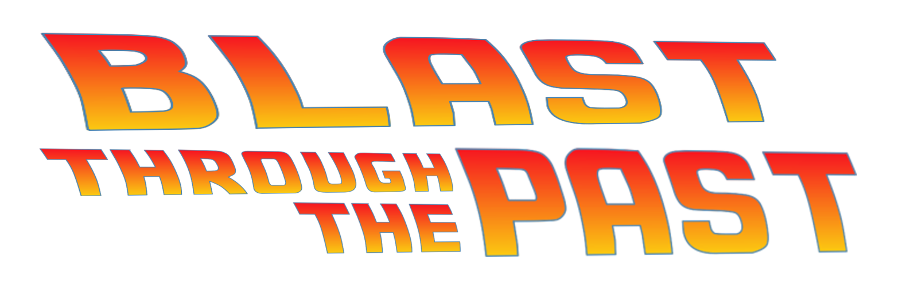

<section class="flex flex-col items-center gap-y-6">
  

  <article class="flex max-w-2xl flex-col gap-y-6">
    <p>
      We’re sticking with the tried and true theme of “<i>backlog-clearing</i>”
      for January! Veterans of BCM are certainly familiar with the annual Blast
      from the Past<i>'ish</i> bonus events that are run every January - and
      we’re only going to tweak the formula a little bit! <b>We promise!</b>
    </p>
    <p>
      This bonus event is going to reward bonus points for completions based on
      the release year (as shown on TrueAchievements) of the game. Games from
      2006-2023 will qualify, but we’ll be separating the years into four
      distinct “buckets” that will award varying amounts of bonus points.
    </p>
    <p>
      Unlike last year, we will not be tying bonus point values to specific
      ratio/time estimate tiers. We’re going to instead tie them to a percentage
      of the base BCM value of the game used in the bonus. The higher the base
      BCM value - the higher the bonus points available!
    </p>

    <ul class="ml-4 list-disc">
      <li>2005 through 2009 - +50% of BCM Value as bonus points</li>
      <li>2010 through 2014 - +25% of BCM Value as bonus points</li>
      <li>2015 through 2019 - +15% of BCM Value as bonus points</li>
      <li>2020 through 2023 - +10% of BCM Value as bonus points</li>
    </ul>

    <p>
      This type of scoring is going to become the standard for most of the bonus
      event going forward. It is an effort to push people towards, and reward,
      more [i]chonky[/i] games - as opposed to grinding out as many sub-10 hours
      completions in the highest value bucket as possible. Also,
      <i>chonky is the scientific term.</i>
    </p>

    <p>
      Additionally, any gamer that manages a completion in each of the four
      above buckets will receive an extra 250 bonus points on top of whatever
      else they earned.
    </p>

    <h3>But wait, there’s more!</h3>
    <p>
      We’re adding a community-focused goal to this event! We’re calling it
      <b>Blast Through the Past</b> for a reason! We’re challenging you, as a
      community, to complete a total of 3 games for each and every release year!
      Everyone’s submissions will contribute towards this goal. And, if met,
      everyone who completed at least one Xbox 360 game (Backwards Compatible
      included) will earn <b>an additional 500 bonus points</b> on top of
      whatever else they earned!
    </p>

    <p>
      Community Goals are also going to become a standard occurrence in each
      month that we can find a way to work one in! (Hopefully every month!) It's
      an effort to promote interaction within the community as well as to earn
      some extra bonus points. Some of these may be easier (this month comes to
      mind) whereas some of them may require some serious planning and teamwork!
    </p>

    <p>
      Time to get out the keys for your DeLorean and start gaming your way
      through history!
    </p>

    <b>Notes:</b>
    <ul class="ml-4 list-disc">
      <li>
        They do not have to be 3 unique games. As an example - if three people
        submit Kameo: Elements of Power it would cross off 2005.
      </li>
      <li>
        For any completion to count towards this bonus the ratio must be at or
        above 1.5 and have a time estimate at or above 5-6 hours.<b>Or</b> the
        time estimate must be at or above 20 hours regardless of ratio.
      </li>
      <li>There is no ruling against stacks.</li>
      <li>
        Any game released in 2024 will not qualify for this bonus. Additionally,
        any completion that is due to a new DLC or TU releasing in 2024 also
        will not qualify for this bonus.
      </li>
    </ul>

    <p>Bonus Points can be visualized as follows:</p>

    
  </article>
</section>
